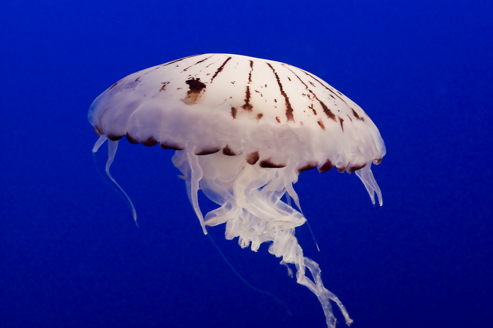

Jelly Fish
Many jellyfish will glow in the dark because they have bioluminescent organs, which emit light.
- Scientific Name: Chrysaora fuscescens
- Average Length: 1 meter
- Average Lifespan: 4 months
- Habitat: Sea
Jelly fish are softbodied, free-swimming aquatic animals with a gelatinous umbrella-shaped bell and trailing tentacles. The bell can pulsate to acquire propulsion and locomotion. Jelly fish are one of the oldest multi-organ animal in the world.